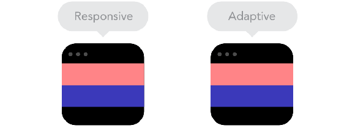
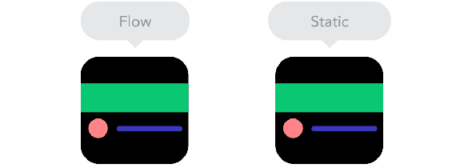
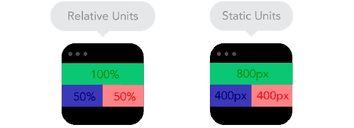
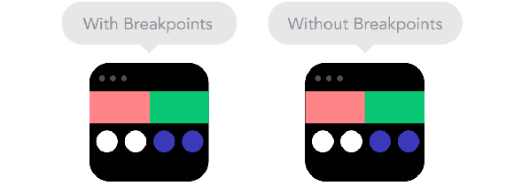
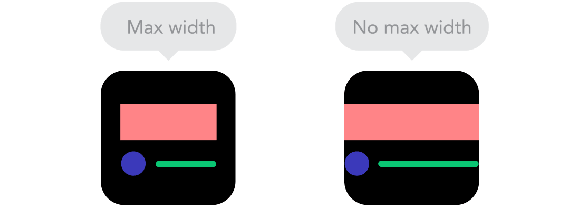
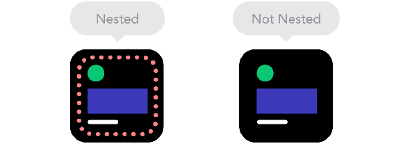
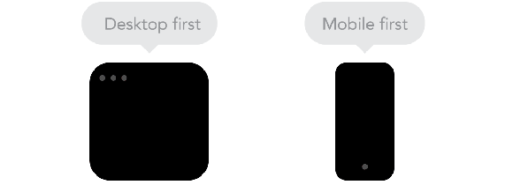
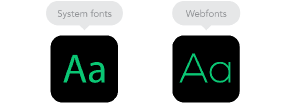
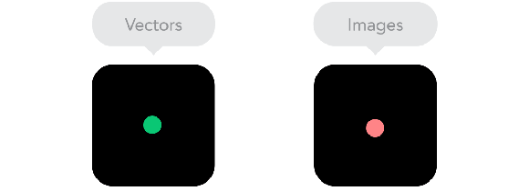

Responsive web design is a great solution to our multi-screen problem, but getting into it from the print perspective is difficult. No fixed page size, no millimetres or inches, no physical constraints to fight against. Designing in pixels for Desktop and Mobile only is also the past, as more and more gadgets can open up a website. Therefore, let’s clarify some basic principles of responsive web design here to embrace the fluid web, instead of fighting it. To keep it simple we’ll focus on layouts (yes, responsive goes way deeper than that and if you want to learn more this is a good start).
Responsive vs Adaptive web design
It might seem the same but it isn’t. Both approaches complement each other, so there is no right or wrong way to do it. Let the content decide.

The flow
As screen sizes become smaller, content starts to take up more vertical space and anything below will be pushed down, it’s called the flow. That might be tricky to grasp if you are used to design with pixels and points, but makes total sense when you get used to it.

Relative units
The canvas can be a desktop, mobile screen or anything in between. Pixel density can also vary, so we need units that are flexible and work everywhere. That’s where relative units like percents come in handy. So making something 50% wide means it will always take half of the screen (or viewport, which is the size of the opened browser window).

Breakpoints
Breakpoints allow the layout to change at predefined points, i.e. having 3 columns on a desktop, but only 1 column on a mobile device. Most CSS properties can be changed from one breakpoint to another. Usually where you put one depends on the content. If a sentence breaks, you might need to add a breakpoint. But use them with caution – it can get messy quickly when it’s difficult to understand what is influencing what.

Max and Min values
Sometimes it’s great that content takes up the whole width of a screen, like on a mobile device, but having the same content stretching to the whole width of your TV screen often makes less sense. This is why Min/Max values help. For example having width of 100% and Max width of 1000px would mean that content will fill the screen, but don’t go over 1000px.

Nested objects
Remember the relative position? Having a lot of elements depending on each other would be difficult to control, therefore wrapping elements in a container keeps it way more understandable, clean and tidy. This is where static units like pixels can help. They are useful for content that you don’t want to scale, like logos and buttons.

Mobile or Desktop first
Technically there isn’t much of a difference if a project is started from a smaller screen to a bigger (mobile first) or vice versa (desktop first). Yet it adds extra limitations and helps you make decisions if you start with mobile first. Often people start from both ends at once, so really, go and see what works better for you.

Webfonts vs System fonts
Wanna have a cool looking Futura or Didot on your website? Use webfonts! Although they will look stunning, remember that each will be downloaded and the more you’ll have, the longer it will take to load the page. System fonts on the other hand are lightning fast, except when the user doesn’t have it locally, it will fall back to a default font.

Bitmap images vs Vectors
Does your icon have lot of details and some fancy effects applied? If yes, use a bitmap. If not, consider using a vector image. For bitmaps use a jpg, png or a gif, for vectors the best choice would be a SVG or an icon font. Each has some benefits and some drawbacks. However keep in mind the size — no pictures should go online without optimization. Vectors on the other hand often are tiny, but some older browsers won’t support it. Also, if it has lots of curves, it might be heavier than a bitmap, so choose wisely.

Reprinted from blog.froont.com